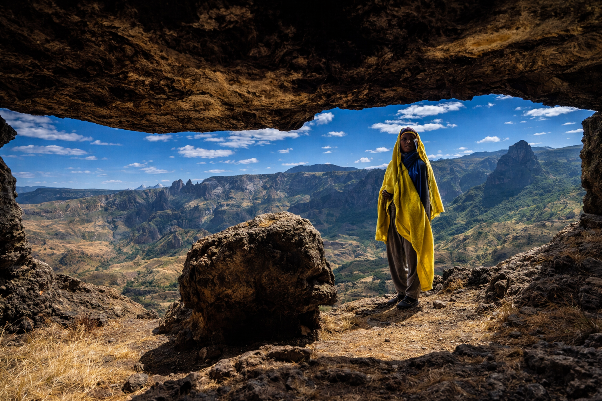

Amhara
85k
Églises de Lalibela
Onze églises monolithiques taillées dans le roc vif

RetourLe voyage aux origines du monde et de la spiritualité
L'Éthiopie, seule nation africaine à n'avoir jamais été colonisée, est un pays à part. Berceau de l'humanité où fut découverte Lucy, c'est aussi une terre chrétienne millénaire aux églises rupestres fascinantes. Des paysages lunaires de la dépression du Danakil aux sommets escarpés des montagnes du Simien, l'Éthiopie offre un voyage hors du temps. Sa culture riche, sa gastronomie unique et sa cérémonie du café font de chaque rencontre un moment sacré et inoubliable.
Découvrez les 15 trésors historiques et naturels de l'Abyssinie
Onze églises monolithiques taillées dans le roc vif

Paysages de soufre et de sel, l'endroit le plus chaud de la terre

Le toit de l'Afrique et le royaume des babouins Gélada

Le Camelot de l'Afrique et ses châteaux royaux du XVIIe siècle

Rencontre avec les peuples Mursi, Hamer et Karo

Vestiges de l'un des plus puissants empires de l'Antiquité

Sanctuaires millénaires isolés sur les îles du lac sacré

Maison de "Lucy", notre ancêtre de 3.2 millions d'années

Lac de lave permanent surnommé la "Porte de l'Enfer"

La quatrième ville sainte de l'Islam aux 82 mosquées

Terre du loup d'Abyssinie, l'un des canidés les plus rares

Le spectacle magistral de la source du Nil ("Fumée de feu")
Le plus grand système de grottes d'Afrique et site sacré
Safari au pied du volcan Fantale et cascades spectaculaires

Alignement mystérieux de stèles funéraires classé à l'UNESCO
Une civilisation millénaire, fière et invaincue.
L'Éthiopie est une terre de continuité historique unique. De la Reine de Saba au Roi Salomon, son identité est ancrée dans des légendes bibliques. C'est le berceau du café (Kaffa) et la terre d'accueil de la première Hégire. Sa culture se manifeste par une calligraphie propre (Guèze), un calendrier original et une musique envoûtante (Éthio-Jazz). L'Éthiopie est le cœur spirituel et diplomatique de l'Afrique.
Un rituel social quotidien sacré, où le café est torréfié et servi en trois tours symboliques.
Selon la tradition, la précieuse Arche de l'Alliance est conservée dans le sanctuaire d'Axoum.
Une mosaïque de tribus (Mursi, Hamer) préservant des rites ancestraux et des parures uniques.
L'Éthiopie suit son propre calendrier de 13 mois, vivant 7 ans en décalage avec le monde.

L'artisanat éthiopien est le reflet d'une élégance millénaire. Découvrez nos produits sélectionnés.
 Origine
Origine
Considéré comme l'un des meilleurs cafés au monde, aux notes florales et citronnées délicates.
 Artisanat
Artisanat
Coton fin tissé à la main orné de broderies colorées (Tibeb), symbole d'élégance éthiopienne.
 Rare
Rare
Croix processionnelle finement ciselée, réplique fidèle des trésors du royaume de Zagoué.
Poterie en terre cuite noire utilisée pour la cérémonie du café, fabriquée à la main au Tigray.
Bijou gravé de motifs géométriques et de caractères Guèze, héritage du royaume d'Axoum.
Copie de peintures religieuses sur parchemin, illustrant l'art iconographique éthiopien.

Addis-Abeba, Centre

Meskel Square, Addis

Simien Mountains

Bahir Dar, Lac Tana

Lac Awassa

Addis-Abeba, Historique
La cuisine éthiopienne est l'une des plus singulières au monde. Conviviale et épicée, elle se partage autour de l'Injera.
La base de tout repas : grande galette de teff fermentée au goût légèrement acide.
Le plat de fête : ragoût de poulet épicé au Berbéré avec un œuf dur.
Bœuf haché finement, mariné au beurre clarifié (Niter Kibbeh) et épices.
Purée onctueuse de pois chiches ou lentilles, le plat du quotidien.
Assortiment végétarien coloré disposé sur une Injera (le "plat de jeûne").
Morceaux de bœuf ou d'agneau sautés avec oignons, ail et romarin.
Morceaux d'Injera imbibés d'une sauce épicée, souvent servis au petit-déjeuner.
Choux vert émincé et sauté avec des épices douces et du beurre clarifié.
Fromage frais éthiopien proche de la ricotta, utilisé pour adoucir le piment.
Pain dense fabriqué à partir de la racine de faux bananier (Enset).
Servi noir et fort lors de la cérémonie, souvent accompagné de popcorn.
Hydromel traditionnel fermenté avec du gousho (sorte de houblon local).
Découvrez la ferveur religieuse et culturelle de l'Éthiopie à travers ses grandes fêtes nationales.
Commémoration de la découverte de la Vraie Croix (Septembre), marquée par de grands bûchers.
Épiphanie éthiopienne (Janvier), célébrant le baptême du Christ avec des processions grandioses.
Célébration du légendaire Éthio-Jazz dans la capitale, réunissant des artistes internationaux.
La période idéale pour la randonnée et la visite des sites historiques. Le ciel est dégagé et les routes sont toutes praticables.
C'est la saison des pluies. Les paysages sont d'un vert éclatant, mais certaines pistes du sud ou du Danakil deviennent inaccessibles.
Vérifiez les conseils aux voyageurs pour les zones frontalières. Addis et les sites historiques sont sûrs, restez vigilant dans les foules.
Attention au mal des montagnes (Addis est à 2300m). Hydratez-vous. Le vaccin fièvre jaune est indispensable.
On mange avec la main droite. Le partage de l'Injera est un signe de fraternité. Accepter toujours le café offert est une marque de respect.
Le jour commence à 6h (0h locale). Le calendrier éthiopien a 7 ans de moins que le calendrier grégorien. Soyez prêt au dépaysement !
Expert Lalibela & Histoire
Abebe est né à Lalibela. Il connaît chaque pierre des églises rupestres et vous racontera leur histoire sacrée.
Expert Danakil & Expéditions
Spécialiste des conditions extrêmes du désert Afar, Selam assure votre sécurité pour une aventure unique au Danakil.
Expert Peuples de l'Omo
Desta possède des liens forts avec les communautés du sud. Il facilite des rencontres authentiques et respectueuses.